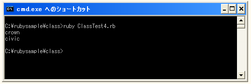

インスタンス変数
オブジェクトの中で値を保存しておくための利用されるのがインスタンス変数です。
ローカル変数をメソッド内で使用することも可能です。ただしローカル変数は一度メソッドを抜けてしまえば値は消えてしまいます。
インスタンス変数はクラス内で全メソッドで共通して使用することが出来ます。最初にどこかのメソッドで使用された時点でインスタンス変数は作成され、一度作成されたインスタンス変数は他のメソッドで値を取り出したり格納したりすることが出来るようになります。
またインスタンス変数はクラスから作成されるオブジェクト毎に固有のものとなります。例えば1つのオブジェクトの中でインスタンス変数に格納された値と、別のオブジェクトの中でインスタンス変数に格納された値は別のものとなります。
インスタンス変数の変数名は「@」で始まります。例えば「@name」などです。ローカル変数などと同じく値が格納された時点から使用できるようになります。
class クラス名
def メソッド名
@name = 値
end
end
インスタンス変数はインスタンス変数が使用可能になったインスタンスメソッド内以外のインスタンスメソッド内でも使用することが出来ます。
class Car
def setName(str)
@name = str
end
def dispName()
print(@name, "¥n")
end
end
car = Car.new()
car.setName("crown")
car.dispName()
上記の場合は「setName」メソッドによってインスタンス変数「@name」に値が格納され、「dispName」メソッドによってインスタンス変数「@name」に格納されている値を表示しています。
インスタンスメソッドの呼び出し
クラスからは複数のオブジェクトを作成することが出来ますが、インスタンス変数はオブジェクト毎に異なる値を割り当てることが出来ます。
class Car
def setName(str)
@name = str
end
def dispName()
print(@name, "¥n")
end
end
car1 = Car.new()
car1.setName("crown")
car2 = Car.new()
car2.setName("civic")
car1.dispName()
car2.dispName()
上記の例では「car1」オブジェクト「car2」オブジェクトには別々のインスタンス変数「@name」が割り当てられていますので、それぞれのオブジェクトに対してメソッドを使って値を格納した場合、上書きされることなく異なる値を格納することができます。
サンプルプログラム
では実際に試してみます。
class Car
def setName(str)
@name = str
end
def dispName()
print(@name, "¥n")
end
end
car1 = Car.new()
car1.setName("crown")
car2 = Car.new()
car2.setName("civic")
car1.dispName()
car2.dispName()
上記を実行すると次のように表示されます。

今回は同じクラスから作成した2つのオブジェクトに対して、それぞれインスタンス変数に文字列を格納してからそれを別のメソッドを使って画面に表示させています。同じインスタンス変数を使っていますがインスタンス変数はオブジェクト毎に異なる値を格納できますので、それぞれ異なる結果を出力することが出来ます。
( Written by Tatsuo Ikura )

著者 / TATSUO IKURA
初心者～中級者の方を対象としたプログラミング方法や開発環境の構築の解説を行うサイトの運営を行っています。